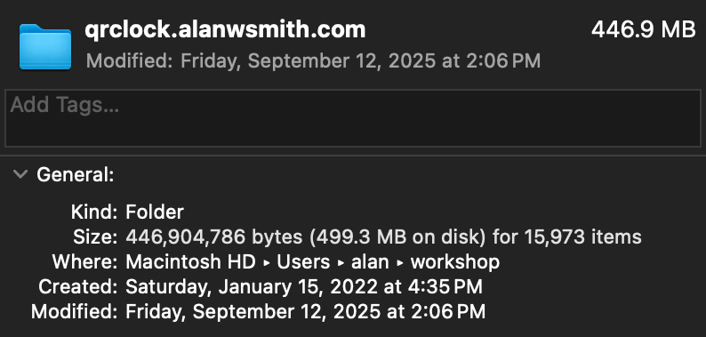

This One's Just for Me
I've been making web sites since the 1900s. The earliest I can find in the Wayback Machinewayback is this snapshot of the University of Alabama Athletics site from 1999.
There were other sites before it. The ones that got me the gig in the athletics department. They've been lost to time, though.
Content Management History
The web has seen dramatic changes since it came online in 1993. Some parts have remained constant. Chief among them, the need to wrangle what content goes on which page. The modern approach is to use a Content Management Systems (CMSs). An app that store content, let you edit it, then merge it into templates to generate a site.
Those systems are great, but
not required. You can make each page
on a site a stand-alone file.
That's where the web started. It's
a pain, though. If you change
a link in a footer you have
to edit every page on the
site to make the update. The
more pages you have, the bigger
the pain.
My path through the world of content management went something like this:
-
Stand-alone Files - Hand edited. Duplication all over the place for things like global links and footers.
-
Server Side Includes - The first saving grace to remove duplication. You put the content for your footer in a single file then reference it on all your pages to include the it when someone visits the page. Update that one file and every page on your site get the update.
-
Perl scripts for page generation - Little apps written in the Perl programming language that made up a basic CMS. Wrapper templates went in their own files. Content in others. Running the script merged them together to make the file that was served for the page. (This is now called Static Site Generation. Back then, it was just hacking together your web site)
-
Server side Perl scripts - The page generation Perl scripts had to be run manually whenever anything changed. That wasn't necessary with server side scripts. Each time someone opened a page the server would run the script behind the scenes to generate the page on the fly. (The generic term for this approach these days is Server Side Rendering. We didn't make the distinction. It was still just hacking together your website in the prior century.)
-
PHP/Active Server Pages/Cold Fusion - Three approaches that worked like server side Perl scripts. Where Perl was a general purpose programming language the predated the web, these languages (and corresponding servers) were built specifically for it. Like Perl, none of these come directly with a CMS. They provide the tools to make roll your own.
-
Ruby on Rails - The first full package I used that could be considered a CMS. Powered by the Ruby programming language it created a set of conventions for working with a database to manage materials for a page. Still took a lot of work to define templates and content types and wire them all together.
-
Drupal - Another evolution in the progress of content management. The selling point was that it made it easier to define little blocks for content types that you could assemble together to make full pages.
-
Django - A full on content management system framework that came out of a newsroom that ran a website. It's based off the Python programming language. I kept wanting to like it, but the tutorials sucked. They tried to show you so much stuff at one time that I couldn't get a foothold into the context.
-
Wordpress - A plug-and-play CMS. Fire it up and you're ready to start posting. You can either install it on a server yourself or pay to use a version someone else maintains. I've done both. It's written in PHP and still going strong. If I had to recommend a website tool without any context it's what I'd point to.
-
Jekyll - A kind of return to the past. Where Wordpress is a Server Side Renderer that generates pages on the fly, Jekyll is a Static Site Generator. You have to run the process that builds the site each time you make a change. Jekyll is the first site tool I used that's powered by Markdown. A file format designed to make it easier to write prose style content.
I'd been using Markdown for my offline notes in an app called NvAlt for years. Being able to use the same format for my site was a nice quality of life improvement.
-
Hugo - Similar to Jekyll but uses the Go programming language (whereas Jekyll uses Ruby). Hugo was faster to use and was easier for me to add features to. Though, I wouldn't say it was easy.
-
Gatsby - A JavaScript based Static Site Generator. It was one of the big "JAMStack" systems. JAM being JavaScript, APIsapis, and Markup. The general idea is to use the foundations of a Static Site Generator for the base pages that can grab more data from other systems to enhance them.
My site was around 2,500 pages when I used Gatsby. It could handle them, but it was slow. Like, it took 20+ minutes for the static part of the site to generate (as opposed to 20 seconds which is how long it takes now).
-
Next.js - Another JavaScript based Static Site Generator. I moved from Gatsby to it pretty quickly because of how slow Gatsby was.
Up to Ruby on Rails, each approach involved writing everything from scratch. The rest had at least some portion of a CMS built-in. After leaving Next, I've gone back to the old ways. Eschewing pre-built CMS frameworks in favor of making my own.
Neopolitan and Neopoligen
Next Bullshit
My tenure with Next.js didn't last long. Two big sticking points burned me:
-
It takes a huge amount of space.
For example, the source code for the first version of QR Code Clockclock is ~450 MB:

It's now about 300 KB. Most of which is the Rick Roll GIF.
-
It broke all the time.
Next had constant updates. Sometimes nothing broke. Other times, they did. While annoying, that's part of using a framework.
That's not what got me. What got me was it breaking when I hadn't updated or changed anything. Specifically, my site was working fine one day when I saw a typo. I update a single letter and tried to re-deploy the site. It broke.
Some external dependency had changed somewhere in a way that I couldn't see. Even though I hadn't touch the code on my site it just stopped working.
I'd already been frustrated with Next. That was the last straw. I flicked it the bird and started writing my own CMS the next day.
More than Markdown
If you work on the web, you're probably familiar with Markdown. It's the de facto way to write prose for web pages. You write a stripped down text document that transforms into all the HTML required to make headings and paragraphs.
For example, this:
# Hello, Markdown
Here's a good example sentence:
The quick brown fox jumps
over the lazy dog.
Turns into this:
Endnotes
-
Beyond all the content management systems I used geocities and blogger/blogspot at various intervals. I don't classify those in the same category since I didn't have to write any code to make them work.
-
The CMS history list is mostly in order. There was some cross over and back and forth between them. I used Wordpress on and off at various points, for example.
-
I also worked various CMSs in my years at the PGA TOUR. Some custom, in-house ones and Adobe Experience Manager. I didn't use them myself much. Most of my work was designing feeds to support them rather then
References
-
Alabama Athletics Home Page Nov. 28, 1999.
Footnotes
-
wayback
The Internet Archive's Wayback Machine is a giant collection of archived web pages going back to the early days of the web. Massive kudos to the folks who had the foresight to set it up and those that keep it going.